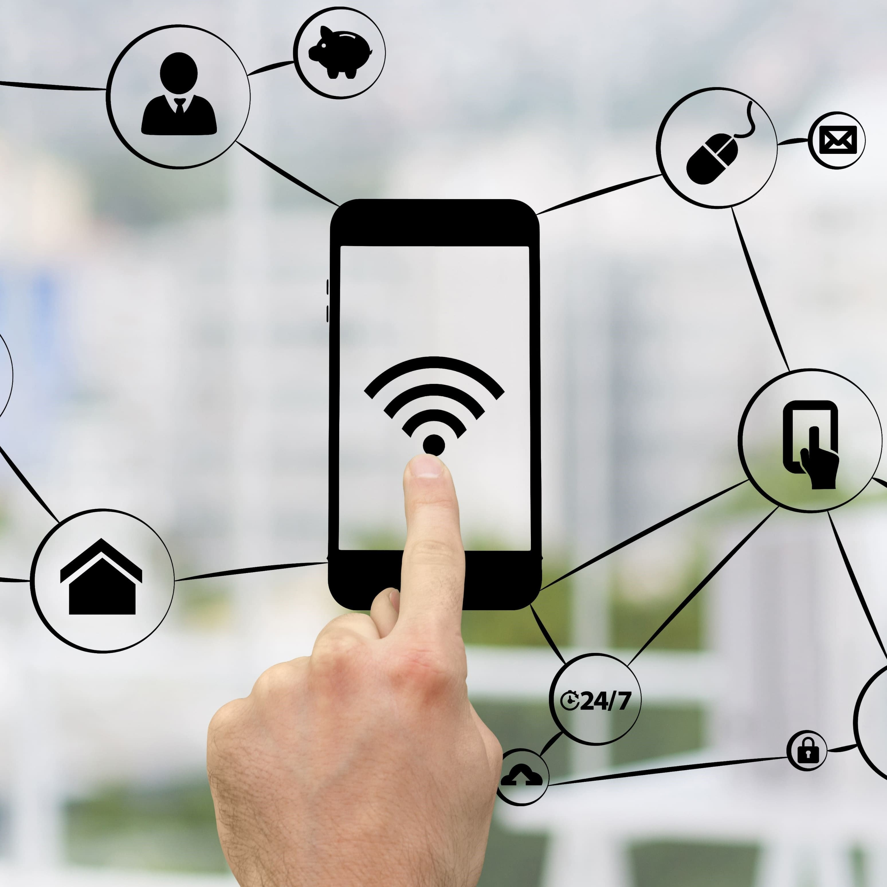
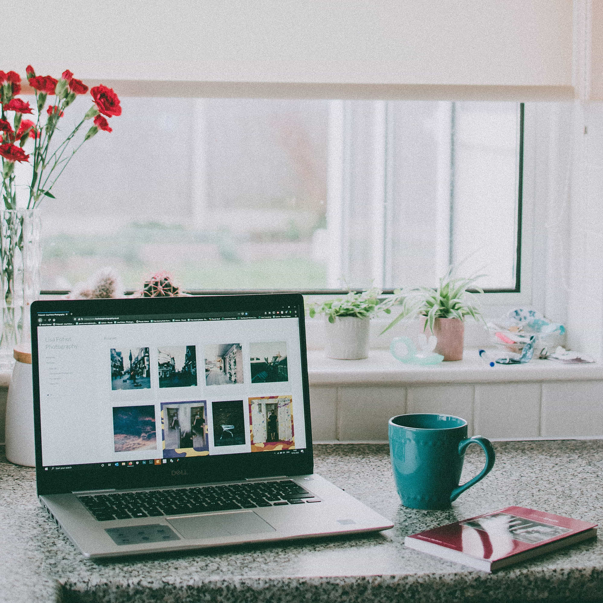
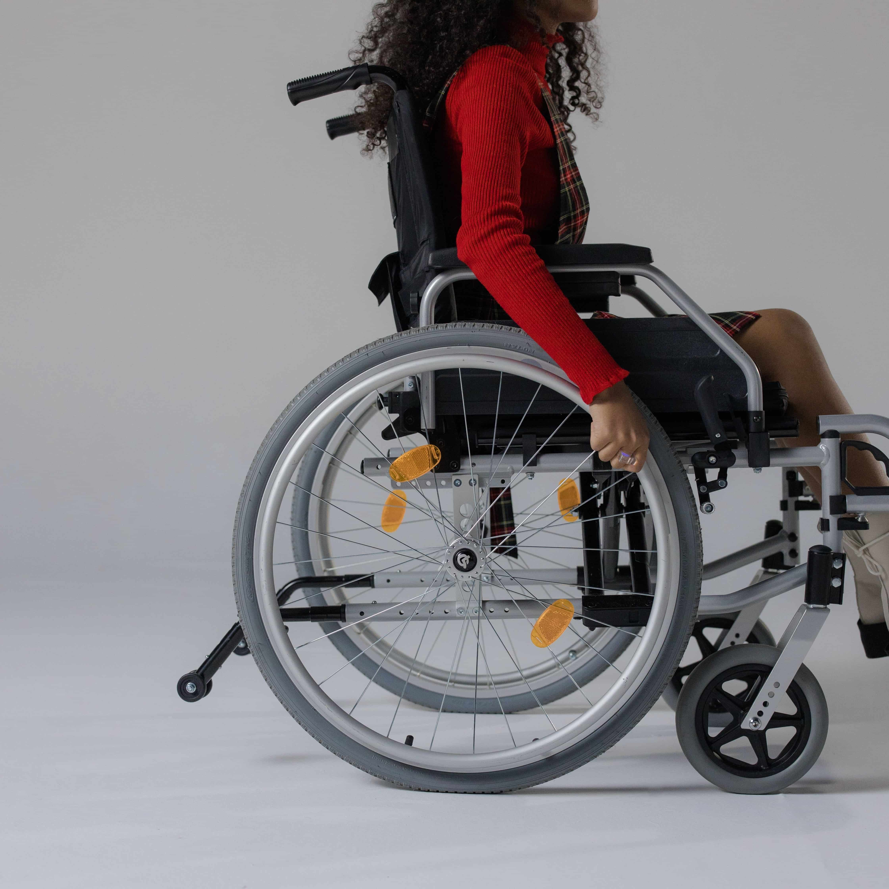
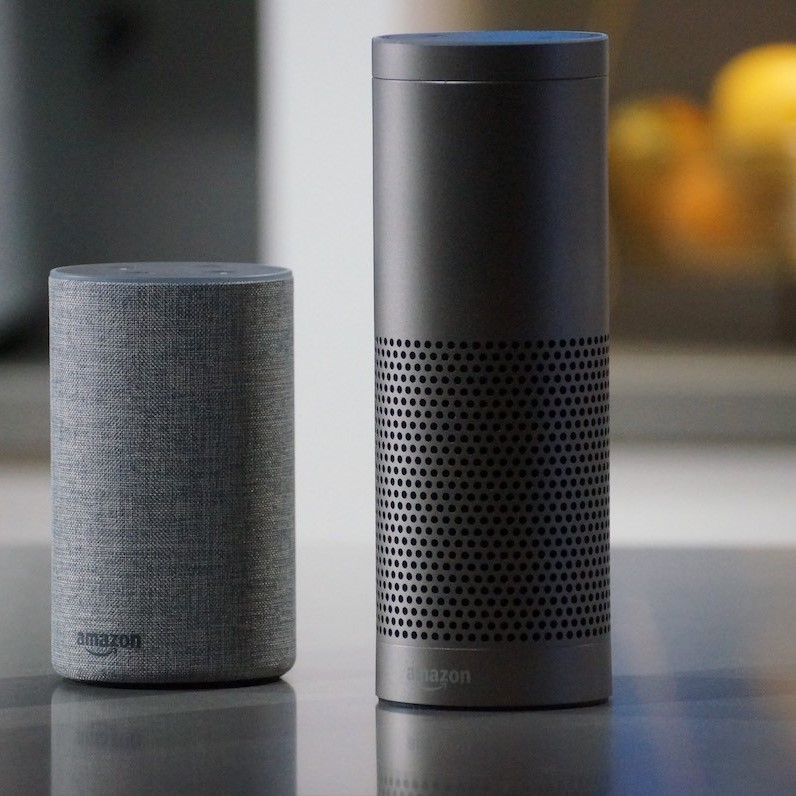
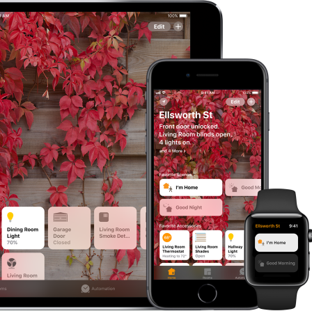
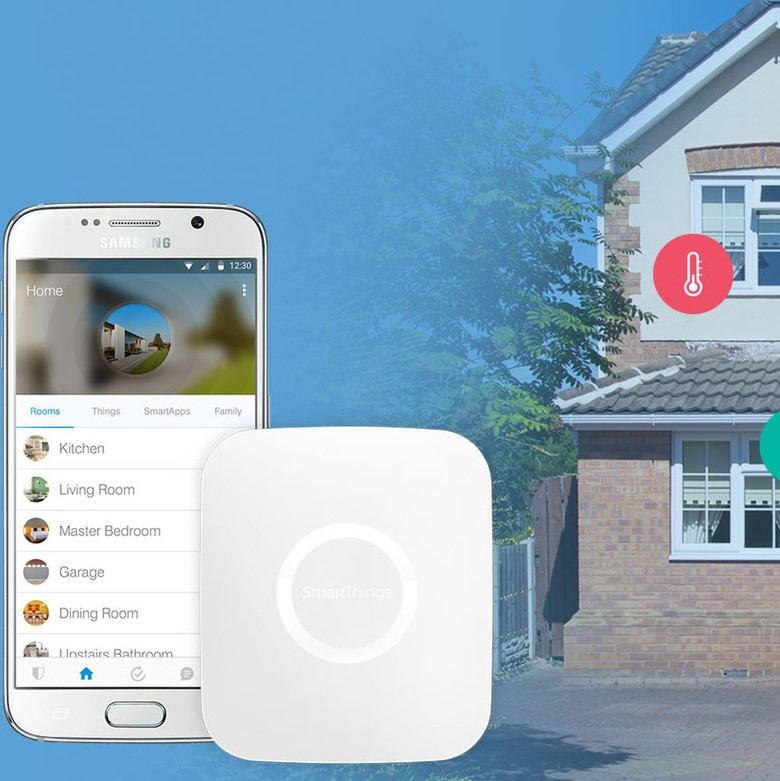
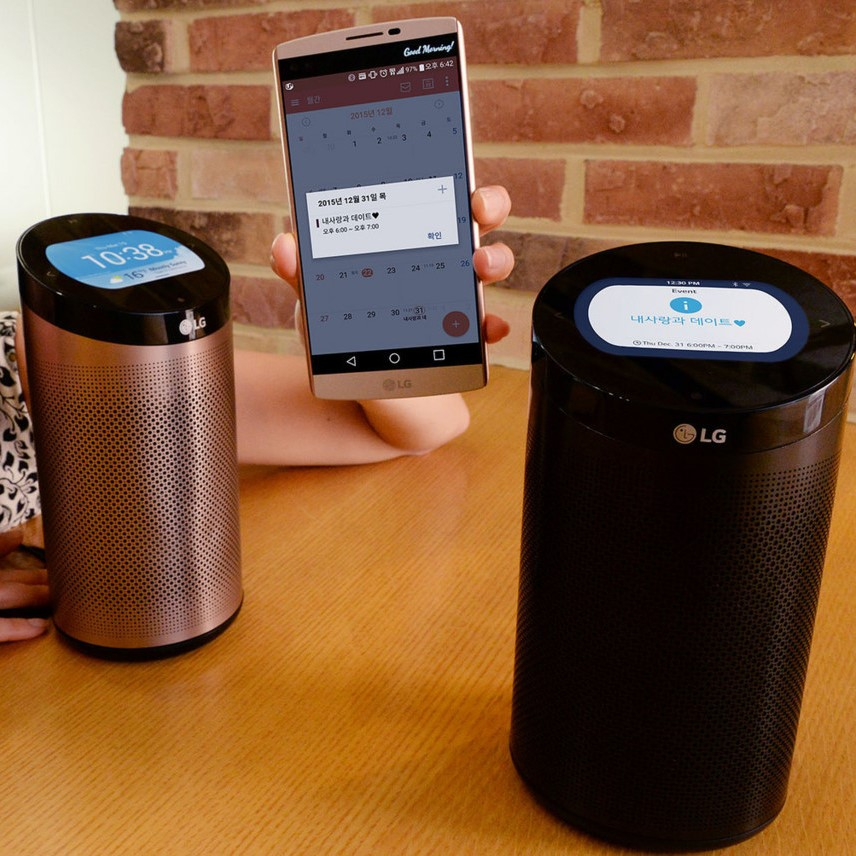

La palabra domótica proviene de la union de las palabras domus (casa en latin)
y autónomo (proveniente del girego: que se gobierna a si mismo).
Por lo anterior, se puede decir que la domótica engloba a los sistemas capaces de automatizar una vivienda
o cualquier tipo de edificación, en areas como la gestión de energía, seguridad, bienestar y comunicación,
por lo regular se realiza una integración con redes interiores y exteriores de comunicación ya sea cableadas
o inalambricas, por lo tanto, se puede tomar control de estos sistemas tanto dentro como fuera de la vivienda
o edificación. En la siguiente sección encontrara mas informacion seccionada por areas, o bien puede navegar
por nuestro menu para buscar tutoriales, como comenzar en el mundo maker si es que le gusta hacer las cosas
por su cuenta o bien buscar lo que necesita en la tienda.
Areas de la domótica

Comunicaciónes
Supervision y control remoto de la vivienda.
Gestion de energía
Control inteligente de la iluminación, climatización, etc.
seguridad
Vigilancia de bienes, animales o personas.

Confort
Gestión de dispositivos y actividades domesticas.

Accesibilidad
Manejo de elementos por personas con discapacidades.
Cómo convertir mi hogar en uno inteligente:
Hace algunos años era impensable implementar un hogar inteligente debido principalmente al elevado
costo de los dispositivos, sin embargo, en la actualidad existen diversas opciones y entornos a los
que nos podemos inclinar para lograr la conectividad de muestro hogar.
Aunque existen diferentes entornos con grnandes competidores como antes se menciono, esto tambien nos
trae el problema de la fragmentación, esto es basicamente la falta de un estandar. Con esto en mente, en
este apartado hablamos de cada una de ellas y que ofrecen.

Amazon y Alexa
La propuesta de Amazon para la domotica.
Google Assistant
Mayordomo virtual de Google sutilmente colocado en nuestras vidas.

Apple Home Kit
Apple apuesta por su base de usuarios con su solución para la domótica.

Samsung SmartThings
El ecosistema domótico de Samsung basado en sus productos.

LG SmartThinQ
Una opción que se queda entre Alexa y Samsung StmartThings.